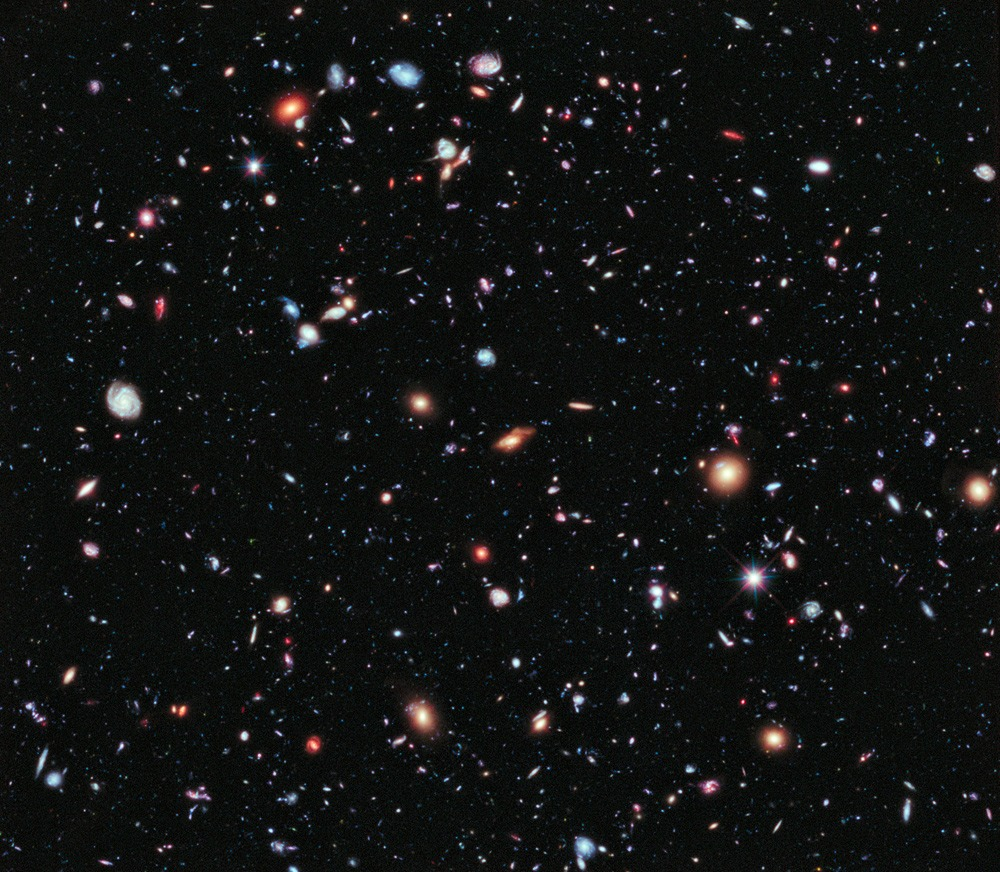
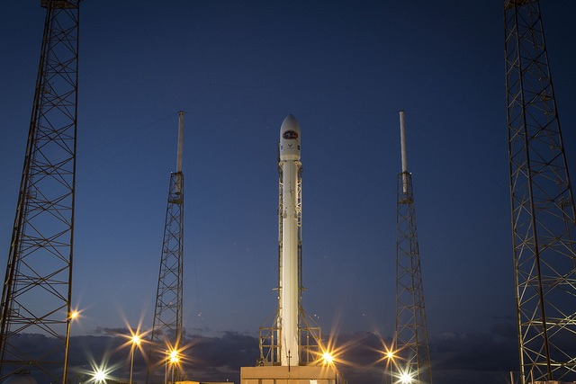

A year of looking further — telescopes, classrooms and 41,000 visitors under one dome.
We did not add more exhibits this year. We added more time — for questions, for night sessions, for teachers.
When we reopened the dome in June, attendance on weekday evenings tripled. Families came back not for a new show but for the chance to stay longer at the eyepiece. That single observation reshaped the year: we extended night sessions, trained eleven volunteer guides and rebuilt the school programme around three visits instead of one.
None of this would have happened without our partners in the district education office and the forty-two teachers who carried the programme into their classrooms.
— Dr. A. Meenakshi, Director

Eight months, one new mirror and a roof that finally opens without a crowbar.
The refit replaced the 1987 slit mechanism with a geared drive and added a 250 mm reflector on a computerised mount. Evening sessions now run four nights a week between October and March, when the skies over the Nilgiris are at their clearest.
Visitors can book a fifteen-minute slot at the eyepiece, guided by one of our trained volunteers. Most slots sold out within a day of opening.
Launch photograph courtesy SpaceX, public domain.
Annual visitors, FY 2022–23 to 2025–26.
| Programme | 2024–25 | 2025–26 | Change |
|---|---|---|---|
| Night sessions | 2,140 | 6,870 | +221% |
| School visits | 9,400 | 14,050 | +49% |
| Teacher workshops | 12 | 31 | +158% |